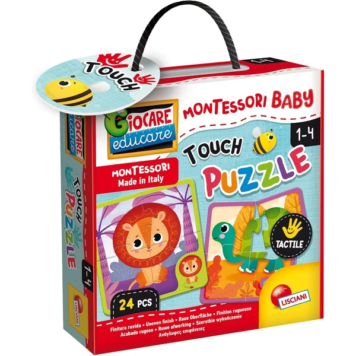
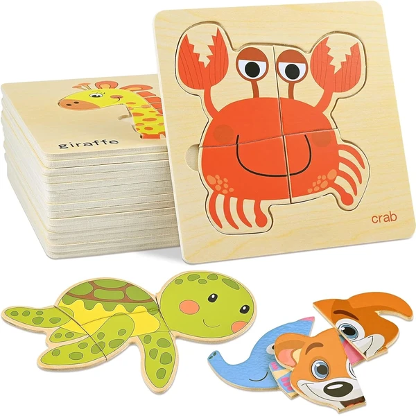
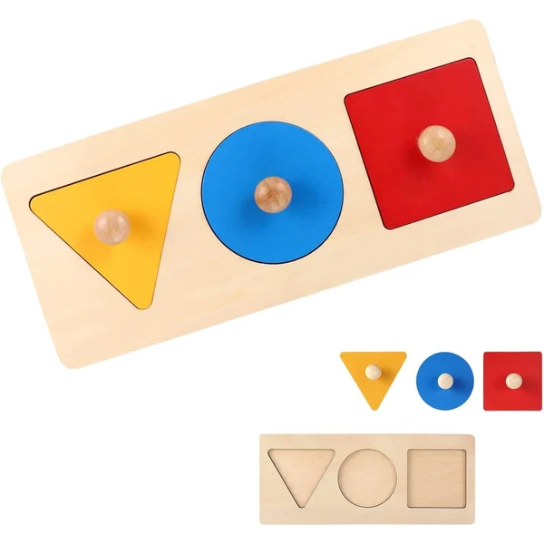
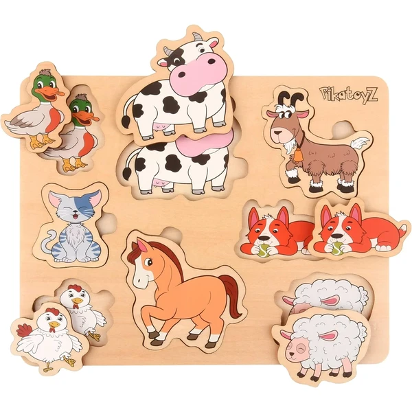
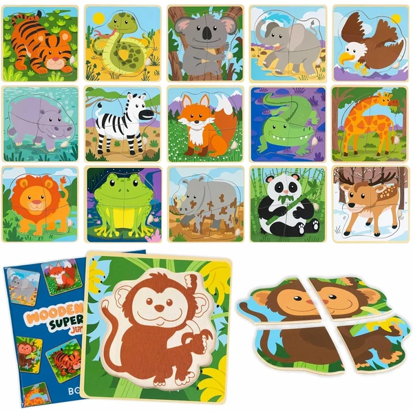
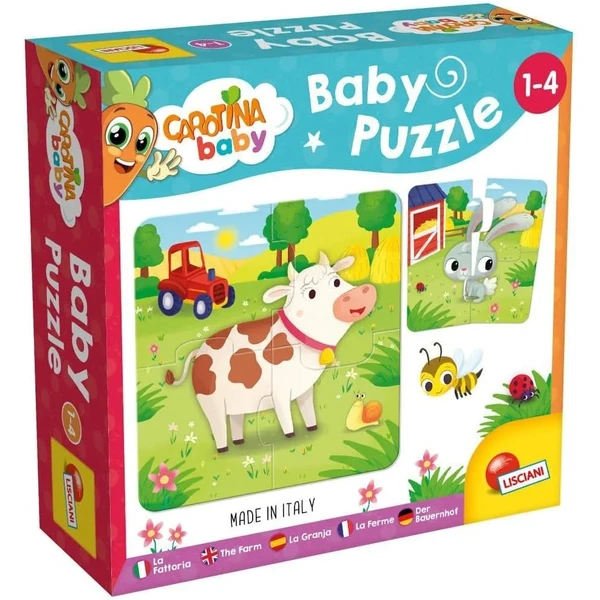
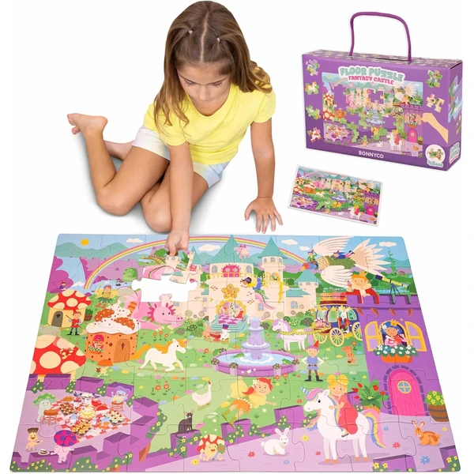

Puzzle táctil de animales Lisciani
Un set de seis mini puzles de solo cuatro piezas cada uno, con acabado rugoso y forma de animales (león, oso, tortuga...). Pensado específicamente desde los 12 meses para las primeras manipulaciones.
⭐ ¿Por qué nos gusta?
- ✔ Seis puzles de solo 4 piezas cada uno.
- ✔ Acabado rugoso que estimula el tacto.
- ✔ Pensado específicamente desde los 12 meses.
💬 Lo que más destacan las familias
Se repite bastante el comentario de que el acabado rugoso invita a los niños a tocar las piezas antes incluso de encajarlas, lo que ayuda en sus primeros puzles. Que sean solo cuatro piezas por animal también se valora para no frustrarse al principio.
Ver en Amazon

Puzzles de madera de animales GOLDGE
Un set de ocho puzles de madera de una sola pieza cada uno, con forma de animal (oso, elefante, jirafa...) y piezas grandes fáciles de levantar. Pensado para practicar el encaje simple.
⭐ ¿Por qué nos gusta?
- ✔ Ocho puzles de una sola pieza cada uno.
- ✔ Madera resistente y piezas grandes.
- ✔ Colores vivos que llaman la atención.
💬 Lo que más destacan las familias
Un detalle que aparece una y otra vez es lo satisfactorio que resulta para el niño completar el encaje con una sola pieza, algo que repiten varias veces seguidas. Los colores vivos también ayudan a que se fijen enseguida en cada animal.
Ver en Amazon

Clasificador de formas geométricas de madera
Un tablero de madera con tres formas y tres colores distintos para encajar en su hueco correspondiente. Más que un puzle tradicional, es un clasificador Montessori de formas básicas.
⭐ ¿Por qué nos gusta?
- ✔ Solo tres formas, ideal para empezar.
- ✔ Asas fáciles de agarrar.
- ✔ Ligero y fácil de transportar.
💬 Lo que más destacan las familias
Entre las familias que lo tienen se comenta que empezar con solo tres formas facilita mucho que el niño entienda el juego sin frustrarse. Las asas para agarrar cada pieza también se mencionan como un acierto para las manos más pequeñas.
Ver en Amazon

Puzzle de madera animales de granja Pikatoyz
Un puzle de madera de ocho piezas con animales de granja, sin clavijas ni piezas pequeñas sueltas, pensado para bebés de entre 12 y 18 meses.
⭐ ¿Por qué nos gusta?
- ✔ Ocho piezas con animales de granja.
- ✔ Sin clavijas ni piezas pequeñas sueltas.
- ✔ Pensado específicamente para esta edad.
💬 Lo que más destacan las familias
Los compradores valoran especialmente que no tenga piezas pequeñas sueltas, así da más tranquilidad dejar que el niño juegue sin supervisión constante. Los animales de granja también son un acierto seguro para mantener su atención.
Ver en Amazon

Pack 16 puzzles de madera BONNYCO
Un pack de dieciséis mini puzles de madera de cuatro piezas cada uno, cada uno con un animal distinto y su propia bolsa. Cada puzle incluye un dibujo guía de fondo para facilitar el montaje.
⭐ ¿Por qué nos gusta?
- ✔ Dieciséis puzles distintos, cuatro piezas cada uno.
- ✔ Dibujo guía de fondo en cada marco.
- ✔ Bolsa individual para cada puzle.
💬 Lo que más destacan las familias
Muchos padres coinciden en que tener tantos puzles distintos evita que el niño se aburra siempre con el mismo diseño. El dibujo guía de fondo también ayuda bastante en los primeros intentos, cuando todavía cuesta encajar las piezas.
Ver en Amazon

Puzzle de la granja Carotina Baby Lisciani
Un puzle con ilustraciones de animales de granja, pensado para que los más pequeños asocien formas y colores mientras trabajan la motricidad fina.
⭐ ¿Por qué nos gusta?
- ✔ Ilustraciones sencillas de animales de granja.
- ✔ Piezas grandes, pensadas para manos pequeñas.
- ✔ Formato compacto para llevar de viaje.
💬 Lo que más destacan las familias
Lo que más suele gustar es lo sencillas y claras que son las ilustraciones, fáciles de reconocer para los más pequeños. Las piezas grandes también se agradecen porque facilitan el agarre mientras practican la motricidad fina.
Ver en Amazon

Puzzle XXL Castillo de Fantasía BONNYCO
Un puzle de suelo gigante de 48 piezas grandes con la temática de un castillo de fantasía (princesas, unicornios, dragones...). Incluye una hoja guía para completar el dibujo.
⭐ ¿Por qué nos gusta?
- ✔ Piezas grandes de cartón grueso.
- ✔ Incluye hoja guía visual.
- ✔ Asa para transportarlo y guardar las piezas.
💬 Lo que más destacan las familias
No es raro encontrar comentarios sobre lo bien que funciona la hoja guía para completar un puzle con tantas piezas. Al ser de suelo y con piezas grandes, también se valora que se pueda jugar en grupo sin que resulte incómodo.
Ver en Amazon